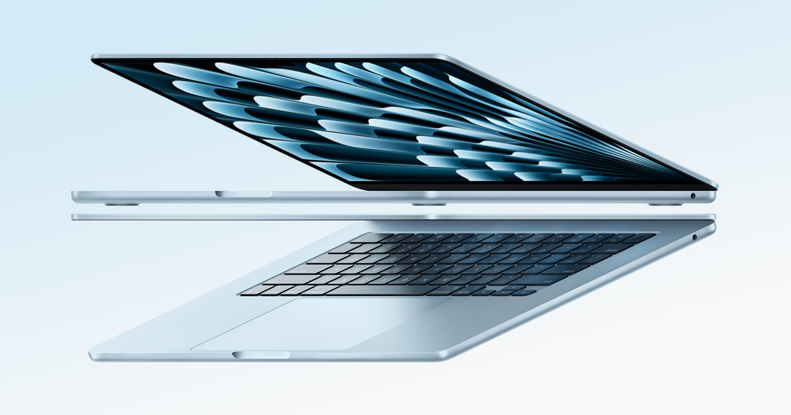

My MacBook M2 Journey: Why I Upgraded & 3 Must-Have Accessories
Contents
Ready to elevate your MacBook M2 experience? Here’s why I made the switch and the three accessories that transformed my workflow.
🌟 Why I Fell in Love with the MacBook M2 #

After years of juggling bulky laptops and endless charger hunts, I took the plunge and got myself a MacBook M2. Honestly? It’s been a game-changer. The blazing-fast performance, jaw-dropping Retina display, and battery life that lasts through my longest coding marathons have me hooked. Whether you’re a developer, designer, or just someone who loves sleek tech, the M2 is a dream machine.
But here’s the thing: a MacBook alone isn’t enough to unlock its full potential. To make my setup truly mine, I invested in a few carefully chosen accessories that have made my work smoother, my desk cleaner, and my travel life easier. Below, I’m sharing the three accessories I can’t live without — and why they’re worth every penny for any MacBook M2 owner.
🖱️ 1. Portronics Toad II Wireless Bluetooth Mouse #
Why It’s a Must-Have: #
Seamless Bluetooth Connectivity: Pairs instantly with macOS — no dongles, no fuss.
Portable & Lightweight: Slips into my backpack for coffee shop work sessions.
Budget-Friendly Precision: Smooth tracking and responsive clicks, even during 10-hour coding sprints.
As a developer, I often switch between the MacBook’s trackpad and a mouse. While the trackpad is great, the Portronics Toad II gives me the precision I need for tasks like debugging code or editing designs. It’s affordable, reliable, and feels like an extension of my workflow. If you’re tired of trackpad fatigue, this mouse is a no-brainer.
Pro Tip: Adjust the DPI settings for a custom cursor speed that matches your vibe.
💼 2. PIKALAX Louis Tigor Laptop Sleeve Bag #
Why It’s a Must-Have: #
Perfect Fit for MacBooks: Tailored for 13–14" models, hugging my M2 like a glove.
Stylish & Durable: Premium materials that scream professionalism while protecting against scratches.
Travel-Ready Design: Slim enough to slide into my backpack without adding bulk.
When you’re dropping serious cash on a MacBook, protecting it is non-negotiable. The PIKALAX Louis Tigor Sleeve has been my go-to for carrying my M2 to meetups, coworking spaces, and even weekend getaways. It’s saved my laptop from a few close calls (hello, coffee spills!) and looks sharp doing it.
Pro Tip: Pair it with a microfiber cloth to keep your MacBook’s screen spotless.
🎧 3. realme Buds T310 Truly Wireless Earbuds #
Why It’s a Must-Have: #
Crystal-Clear Audio: Rich sound for music, podcasts, or Zoom calls.
Low-Latency Mode: Perfect for gaming or syncing audio during video edits.
All-Day Battery: Lasts through my busiest days without needing a recharge.
Whether I’m deep in a coding flow with lo-fi beats or hopping on client calls, the realme Buds T310 deliver. They’re wireless, comfortable for hours, and cut out background noise like a charm. For anyone balancing work, creativity, or even casual Netflix binges, these earbuds are a steal for the price.
Pro Tip: Use the realme app to tweak the EQ settings for your favorite music genre.
Are These Accessories Worth It? #
These aren’t just random add-ons — they’ve genuinely leveled up my productivity, comfort, and confidence as a MacBook M2 user. The mouse makes precision tasks a breeze, the sleeve keeps my investment safe, and the earbuds keep me in the zone. Together, they’ve transformed my MacBook from a great laptop into a powerhouse workstation.
If you’re new to the MacBook world or looking to optimize your setup, these accessories are the perfect starting point. They’re practical, affordable, and designed to make your tech life easier.
What’s in Your MacBook Setup? #
Got a MacBook M2 (or any MacBook)? What accessories are you obsessed with? Drop your recommendations in the comments below — I’m always on the hunt for new gear to try! Let’s help each other build the ultimate MacBook setup.
Happy coding, creating, and exploring!
Originally published on Hashnode.